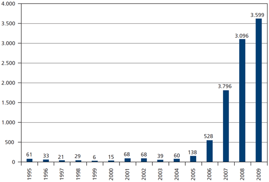
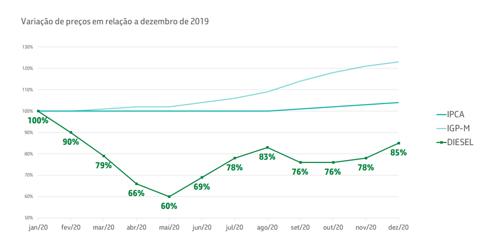

A adição de biodiesel foi aumentando através do tempo
O aumento foi de 1% ao ano até mar/2017 onde chegou a 8%
Já em mar/2018 o aumento foi de 2% mas no ano seguinte voltou a ser de 1% ao ano chegando a 14% a 13% em mar/202
A estimativa para 2023 é de 15%
2° Pergunta
A importância e que por se de origem vegetal o biodisel contribui com o meio ambiente
sendo totalmente sustentável, ajudando a diminuir gases tóxicos e nocivos no meio ambiente.
O QUE É O BIODISEL?

O biodiesel é um combustível renovável obtido a partir de um processo químico denominado transesterificação.
Por meio desse processo, os triglicerídeos presentes nos óleos e gordura animal reagem com um álcool primário, metanol ou etanol, gerando dois produtos: o éster e a glicerina.
O primeiro somente pode ser comercializado como biodiesel, após passar por processos de purificação para adequação à especificação da qualidade, sendo destinado principalmente à aplicação em motores de ignição por compressão (ciclo Diesel).
A sua mistura ao diesel fóssil teve início em 2004, em caráter experimental e, entre 2005 e 2007, no teor de 2%, a comercialização passou a ser voluntária.
A obrigatoriedade veio no artigo 2º da Lei n° 11.097/2005, que introduziu o biodiesel na matriz energética brasileira.
Em janeiro de 2008, entrou em vigor a mistura legalmente obrigatória de 2% (B2), em todo o território nacional.
Com o amadurecimento do mercado brasileiro, esse percentual foi sucessivamente ampliado pelo CNPE até o atual percentual de 12,0%.
A especificação do biodiesel tem sido aprimorada constantemente ao longo dos anos, o que tem contribuído para o alinhamento da sua qualidade às condições do mercado brasileiro e a sua harmonização com as normas internacionais, assegurando maior segurança e previsibilidade aos agentes econômicos.
A especificação do biodiesel a ser comercializado no país para ser misturado ao óleo diesel A é estabelecida pela Resolução ANP nº 45, de 25 de agosto de 2014.
Aviso: Foi aprovada, em 29/4/2021, pela Diretoria Colegiada da ANP, a Nota Técnica Conjunta nº 10/2021/ANP, que propõe novo modelo de comercialização de biodiesel para atendimento da mistura obrigatória ao Diesel B, de forma a atender o disposto na Resolução CNPE nº 14/2020.
O QUE É O DISEL?

Óleo diesel é um combustível de aspecto oleoso (como o nome sugere) obtido a partir da destilação fracionada (refino) do petróleo.
Sua composição é considerada complexa porque possui substâncias como hidrocarbonetos (em maior quantidade) e compostos orgânicos com nitrogênio, oxigênio e enxofre.
De todos os produtos derivados do petróleo (como a gasolina, óleo lubrificante e querosene), o óleo diesel é mais abundante, ou seja, é a fração em maior quantidade no petróleo.
1. Características do óleo diesel
Aspecto límpido;
Toxicidade considerada média;
Não apresenta material em suspensão (resíduos sólidos);
Possui cheiro forte e característico;
É um líquido pouco volátil;
É inflamável.
Utilização do óleo disse
O óleo diesel, de forma geral, tem grandes aplicações nos setores rodoviário (quando utilizado em carros, ônibus, furgões e caminhões) e industrial (quando utilizado em geradores elétricos ou para manter o aquecimento em caldeiras).
Vale ressaltar que pequenas embarcações também fazem uso desse combustível.
No Brasil, a utilização do óleo diesel está bastante direcionada para o transporte de cargas, principalmente nos motores de caminhões, pois grande parte da distribuição de produtos pelo país é feita por rodovias.